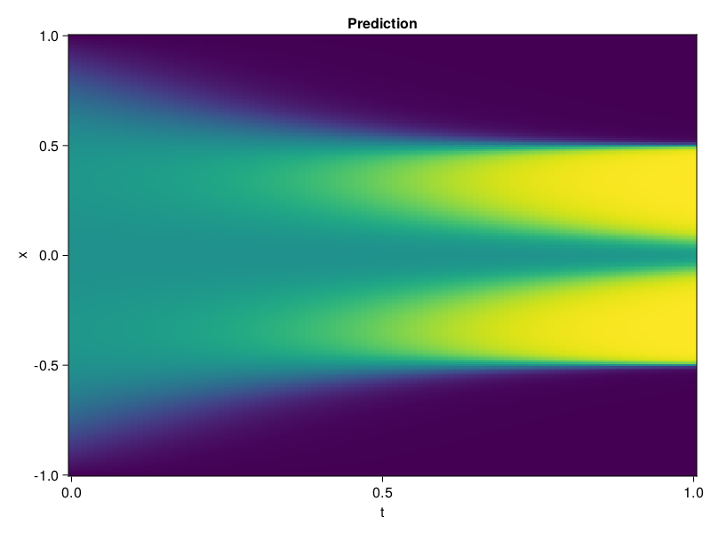

Allen-Cahn Equation with Sequential Training
In this tutorial we are going to solve the Allen-Cahn equation with periodic boundary condition from $t=0$ to $t=1$. The traning process is split into four stages, namely $t\in [0,0.25]$, $t\in [0.0,0.5]$, $t\in [0.0,0.75]$ and $t\in [0.0, 1.0]$.
using ModelingToolkit, IntervalSets
using Sophon
using Optimization, OptimizationOptimJL
@parameters t, x
@variables u(..)
Dₓ = Differential(x)
Dₓ² = Differential(x)^2
Dₜ = Differential(t)
eq = Dₜ(u(x, t)) - 0.0001 * Dₓ²(u(x, t)) + 5 * u(x,t) * (abs2(u(x,t)) - 1.0) ~ 0.0
domain = [x ∈ -1.0..1.0, t ∈ 0.0..0.25]
bcs = [u(x,0) ~ x^2 * cospi(x),
u(-1,t) ~ u(1,t)]
@named allen = PDESystem(eq, bcs, domain, [x, t], [u(x, t)])\[ \begin{align} - 0.0001 \frac{\mathrm{d}}{\mathrm{d}x} \frac{\mathrm{d}}{\mathrm{d}x} u\left( x, t \right) + 5 \left( -1 + \left|u\left( x, t \right)\right|^{2} \right) u\left( x, t \right) + \frac{\mathrm{d}}{\mathrm{d}t} u\left( x, t \right) =& 0 \end{align} \]
Then we define the neural net, the sampler, and the training strategy.
chain = FullyConnected(2, 1, tanh; hidden_dims=16, num_layers=4)
pinn = PINN(chain)
sampler = QuasiRandomSampler(500, (300, 100))
strategy = NonAdaptiveTraining(1, (50, 1))
prob = Sophon.discretize(allen, pinn, sampler, strategy)OptimizationProblem. In-place: true
u0: ComponentVector{Float64}(layer_1 = (weight = [1.3361679315567017 1.8414875268936157; -0.6600525975227356 0.6932739019393921; … ; 0.809417188167572 -1.4125875234603882; -1.4608384370803833 -0.5325372815132141], bias = [0.0; 0.0; … ; 0.0; 0.0;;]), layer_2 = (weight = [-0.409188836812973 0.5980383157730103 … 0.4663408398628235 -0.45710909366607666; 0.324442595243454 0.5262569189071655 … -0.6906396746635437 -0.6210123300552368; … ; -0.39192086458206177 0.6288359761238098 … 0.14582224190235138 -0.5569387674331665; -0.3419705629348755 -0.6036701202392578 … -0.7119274735450745 0.6529157161712646], bias = [0.0; 0.0; … ; 0.0; 0.0;;]), layer_3 = (weight = [-0.5797017216682434 0.09297285228967667 … 0.2133760303258896 -0.08692704886198044; -0.5594640970230103 0.38706091046333313 … -0.4975263774394989 -0.07089775800704956; … ; 0.319362074136734 -0.04661250859498978 … 0.4172126054763794 0.5957692265510559; -0.35907337069511414 0.6101706027984619 … 0.31619566679000854 0.29874521493911743], bias = [0.0; 0.0; … ; 0.0; 0.0;;]), layer_4 = (weight = [0.3067207336425781 0.22484683990478516 … 0.13428941369056702 -0.04711132124066353; -0.37241441011428833 0.4382471442222595 … -0.10839191824197769 -0.5116031765937805; … ; 0.5745581388473511 -0.12696044147014618 … 0.5906615853309631 -0.2646946609020233; -0.7064051628112793 -0.4279150366783142 … -0.32947641611099243 -0.38566169142723083], bias = [0.0; 0.0; … ; 0.0; 0.0;;]), layer_5 = (weight = [-0.4748905301094055 0.46081897616386414 … 0.292091429233551 0.026512274518609047], bias = [0.0;;]))We solve the equation sequentially in time.
function train(allen, prob, sampler, strategy)
bfgs = BFGS()
res = Optimization.solve(prob, bfgs; maxiters=2000)
for tmax in [0.5, 0.75, 1.0]
allen.domain[2] = t ∈ 0.0..tmax
data = Sophon.sample(allen, sampler)
prob = remake(prob; u0=res.u, p=data)
res = Optimization.solve(prob, bfgs; maxiters=2000)
end
return res
end
res = train(allen, prob, sampler, strategy)u: ComponentVector{Float64}(layer_1 = (weight = [1.145559787900673 1.4208370946038766; -0.46698699144021905 -0.6175642144001434; … ; 1.2288475972223325 -1.1167304820519701; -1.8172873893280757 -0.38959731143830845], bias = [1.1217462577287274; -0.5231054891586169; … ; -0.20675423712302474; -0.19278770164864237;;]), layer_2 = (weight = [-0.9590605528915742 0.5866224605850783 … 0.5987020089948115 -0.6033104780887203; 0.7500398216218285 0.5693655285430729 … -0.5787494521111529 -0.5740360333538072; … ; -0.010542137735490061 0.7789295177869248 … 0.4595719155707277 -0.8634947522730329; -0.20418584735015463 -0.4247151728314605 … -0.7594034549666936 0.46522692872757165], bias = [0.04145949007688785; -0.4116134889953028; … ; -0.6565929534075035; 0.14930184118758907;;]), layer_3 = (weight = [-0.6956536253096446 0.09344894878682913 … 0.8911490925449602 -0.06775731638109352; -0.5417775905152751 0.3335249602732326 … -0.3699960726300924 0.030257078401142397; … ; 0.2600391729406356 0.16714741862935595 … -0.11120305914874538 0.7236866515027492; 0.11520342109123438 -0.1536327895739189 … 0.571247995384063 0.5633527117630456], bias = [0.3394182199094514; -0.009915505264939157; … ; 0.15484846723806517; 0.16821067399584144;;]), layer_4 = (weight = [-0.26025206518312405 -0.1525861236496529 … -0.0495611866650114 0.34884475786940267; 0.12173317199791125 0.2846611366221243 … -0.4792175460383274 -0.5149819608598234; … ; 0.1868492842443953 -0.10586678627716915 … 0.7364640368633454 0.22959054766436118; -0.7104156106631505 -0.5551454159550026 … -0.25936340354484916 -0.4187970639197143], bias = [0.021449631920841518; -0.40965617226564816; … ; -0.000959175061191001; -0.10789226879860787;;]), layer_5 = (weight = [-1.0108467147870785 0.47360513455046865 … -0.3372711023175612 0.07538584007029933], bias = [-0.3398534378322756;;]))Let's plot the result.
using CairoMakie
phi = pinn.phi
xs, ts = [infimum(d.domain):0.01:supremum(d.domain) for d in allen.domain]
axis = (xlabel="t", ylabel="x", title="Prediction")
u_pred = [sum(pinn.phi([x, t], res.u)) for x in xs, t in ts]
fig, ax, hm = heatmap(ts, xs, u_pred', axis=axis)